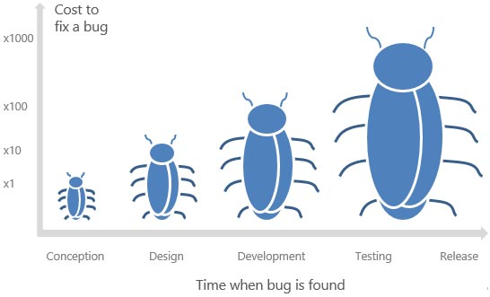

Java Programmeren
Les 5 - Klassendiagram
Inhoud
- Java Huiswerk bespreken
- Documentatie huiswerk bespreken
- Vragen voor Nick
- Zelf aan de slag
Planning aankomende twee weken
- Donderdag 15 oktober
- Lesvrij
- Vrijdag 16 oktober: WEL koffieuurtje
- Donderdag 22 oktober
- Begeleid werken
- Arjen is beschikbaar voor vragen
- Haal achterstallig werk in
- Tip: begin met je eindopdracht
- Vrijdag 23 oktober: Geen koffieuurtje
Huiswerk bespreken
- Eerst Java
- Daarna UML
Java
- https://github.com/hogeschoolnovi/java-scope
- https://github.com/hogeschoolnovi/java-access-modifier
- https://github.com/hogeschoolnovi/java-keywords-static-overloading
- Vragen?
- Iets voordoen?
UML - tips
- Gebruik Appendix A.1
- Je kunt diagrammen maken in:
- Draw.io
- Visual Paradigm
- Visio
- Persoonlijk vind ik schetsen op papier fijner.
- Pak hoofdstuk 2.3 erbij als je niet weet waar je moet beginnen
Waarom documenteren we?
- Functionele requirements en use cases zorgen voor afstemming met de klant.
- Klassen- en sequentiediagrammen zorgen voor communicatie onderling
Het zijn controle-momenten

Voorkomt kosten
In een wat hippere omgeving

Transitie

Opdracht
- Teams -> Algemeen -> Opdrachten
- Mag in tweetallen
- Zelf aan de slag. Begin met lezen en samenvatten
- 16.30: Iedereen terug. Nick speelt product owner. Iedereen mag vragen stellen.
- 1800-2030: Werken aan de opdracht.
- Inleveren: Woensdag 14-10 23.59
Huiswerk
- 14-10 23.59: PV Pleines opdracht
- 29-10: (Java Programmeren) Lezen & bekijken: Interfaces, Maven & Unit-testing.
- Staat 13-10 online